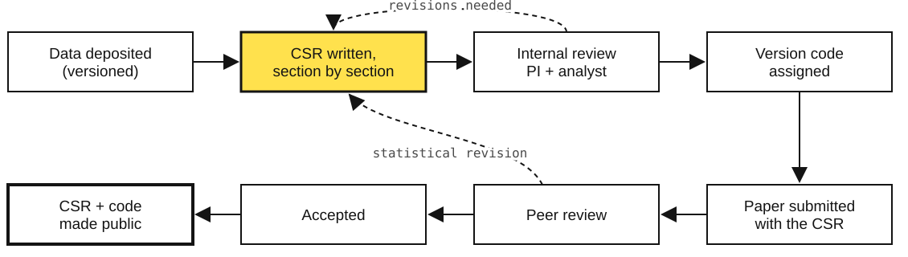
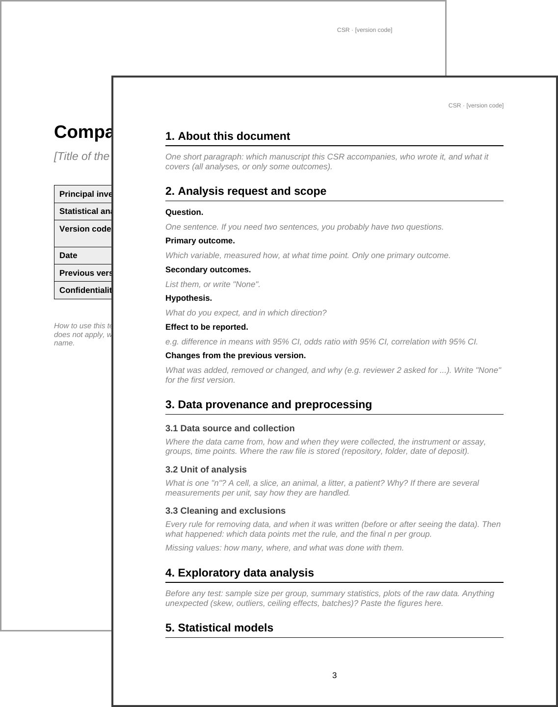
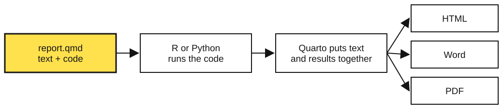
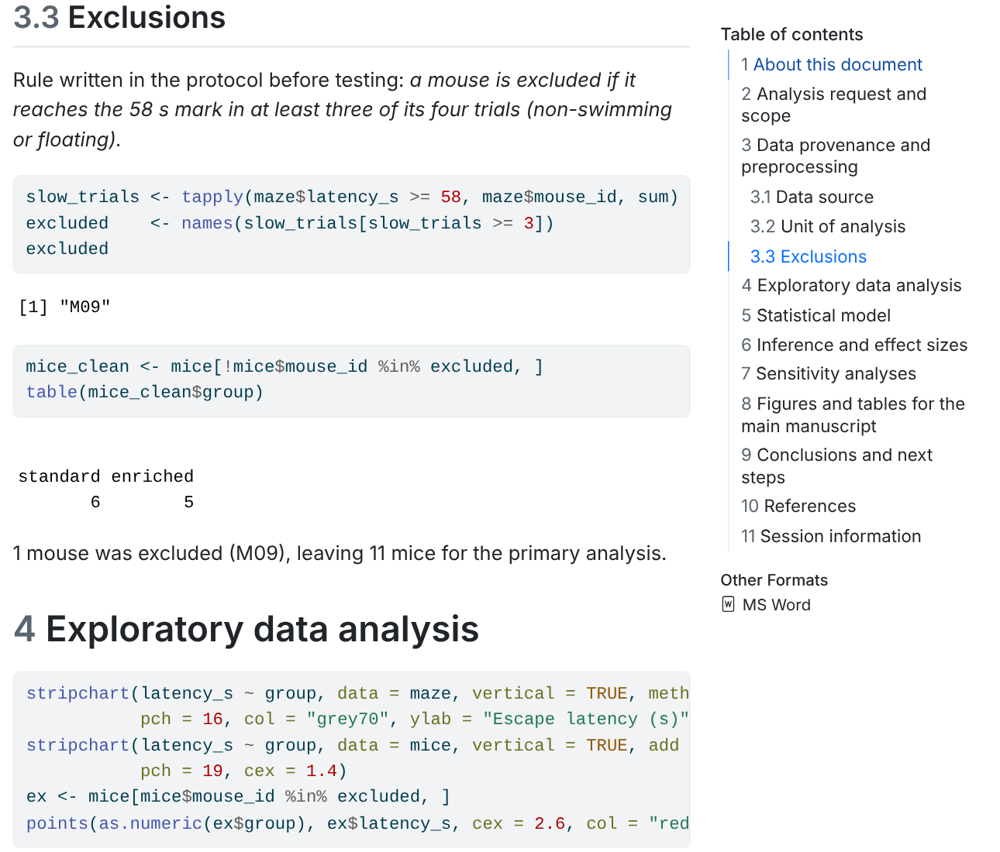

NTS School 2026 · Montevideo
Your paper needs a buddy
Using companion statistical reports
Prof. Dr. Hércules Freitas
Health Informatics Laboratory (LabInfoS) · Bertrand Russell Research Excellence Group (NEC)
School of Medicine, Rio de Janeiro State University (UERJ), Brazil
“Data were analysed with Student’s t-test. A value of p < 0.05 was considered significant.”
What this sentence does not tell you:
| Time | Part |
|---|---|
| 0:00 | Why the analysis needs to be planned |
| 0:20 | Meet the buddy: the Companion Statistical Report (CSR) |
| 0:35 | A CSR with zero code: the Word version |
| 0:50 | The same CSR in Quarto, running live on these slides |
| 1:10 | Your turn: start the CSR of your own project |
| 1:25 | Take-home messages |
No programming experience needed. The code on these slides runs in your browser: you can edit it and press Run.
01 · why plan
Why a study needs a plan before it needs a test
Does an enriched cage (toys, tunnels, running wheel) improve spatial memory in mice?
Simulated data, made for this class.
48 trials, or 12 mice?
The cage was given to the mouse. Four trials from the same mouse are not four independent animals.
Took ≥ 58 s in all four trials. It floated and did not search.
Keep it? Remove it? Was there a rule before the experiment?
Each choice is defensible. Four analysts could make four different combinations.
Same data. p goes from 0.00007 to 0.53.
Grey: single trials. Black: mean of each mouse. The black dot at the top of “enriched” is M09.
Analytic flexibility (the “garden of forking paths”): many small, reasonable decisions, each made after seeing the data, each pushing in the direction we hope for.
Simmons JP, Nelson LD, Simonsohn U. Psychol Sci 2011;22:1359. Gelman A, Loken E. The garden of forking paths, 2013.
If these answers live only in your head, they will change when you see the results. If they live in a document with a date, they will not.
74% of R scripts deposited with research data did not run.
After automatic fixes: still 56%.
Main reasons:
And a script that runs still does not say why a choice was made.
Trisovic A, Lau MK, Pasquier T, Crosas M. A large-scale study on research code quality and execution. Sci Data 2022;9:60.
| Layer of the study | Existing tool |
|---|---|
| Hypotheses, before data collection | Preregistration |
| Raw observations | Data sharing mandates |
| Animals, housing, procedures | ARRIVE 2.0, CONSORT, STROBE |
| Every decision from raw data to the p-value in the paper | ? |
The statistical layer is the one with no standard home.
02 · the companion statistical report
A structured, versioned, executable document that is written alongside the paper and reviewed with it.
what was found
how we got there, and why each choice was made
Salgado Ramos MC, da Câmara AO, Freitas HR. From pipettes to p-values: a framework for companion statistical reporting in experimental neuroscience. Standards 2026;6(2):13. doi:10.3390/standards6020013
Plus three closing sections
Conclusions and next steps · References · Session information (software and versions)
Each section is a checkpoint. You finish it, and justify it, before going to the next.
| Section | The question it answers |
|---|---|
| Analysis request and scope | What exactly are we testing? What changed since the last version? |
| Data provenance | Where did the data come from? What was removed, and by which rule? |
| Exploratory analysis | What do the data look like before any test? |
| Statistical models | Which model, why this one, what it assumes, were the assumptions checked? |
| Inference and effect sizes | How big is the effect, with which interval? (p-value comes with it, never alone) |
| Sensitivity analyses | Does the conclusion survive other reasonable choices? |

When a reviewer asks for a new analysis, it goes back into the CSR, not into an edited methods paragraph.
NEC S01 V03 D1026
| Part | Meaning |
|---|---|
NEC |
the group that issues the report (use your own lab prefix) |
S01 |
service or project number |
V03 |
third version of the analysis |
D1026 |
document iteration (date) |
The template refuses to render if the code is malformed. No unversioned report can circulate.
TRUE means the template will render."NECS1V3D42" or "necs01v03d0042". What happens?\\d{2} reads as “exactly two digits”.A CSR can document a bad model very clearly. It does not teach statistics. It makes the choice visible, so a reviewer can disagree with it.
Human or clinical data do not need to be public. The CSR, its code and its outputs can be shared without the raw file, or run on synthetic data, or deposited under controlled access.
03 · start in Word
You can begin today, with the software you already have.

CSR_Template_Word.docx
CSR_Example_WaterMaze.docxThe structure is what matters, not the software.
Outliers were removed.
Rule written in protocol v1 (2 March 2026), before testing: a mouse is excluded if it reaches 58 s in at least 3 of its 4 trials (floating). One mouse met the rule (M09, enriched group). Final n = 6 standard, 5 enriched.
Who decided, when, by which rule, and what happened to n.
Groups were compared with a t-test.
Unit of analysis: the mouse (housing was assigned per mouse). The four trials were averaged within each mouse. Groups compared with Welch’s t-test, which does not assume equal variances. With n = 5–6 per group, normality was judged from a dot plot rather than a formal test.
Enriched mice performed significantly better (p < 0.05).
Standard-housed mice took on average 10.1 s longer to find the platform (95% CI 0.7 to 19.6 s; p = 0.039).
Sensitivity. With M09 kept, the difference is 4.5 s (95% CI −11.7 to 20.6; p = 0.53). The conclusion depends on the exclusion rule, which is why the rule was fixed in advance and is reported here.
CSR_NECS01V01D0001.docxNumbers are copied by hand from the statistics software into Word.
Every copy is a chance for a typo, and the next version means copying everything again.
04 · quarto, live
Text, code and results in one file. Numbers are never typed by hand.

.qmd filecsr_demo.qmd
---
title: "Companion Statistical Report"
format: [html, docx]
params:
version_code: "NECS01V01D0001"
---
# Data provenance and preprocessing
The mouse, not the trial, is the unit of analysis.
```{r}
maze <- read.csv("maze.csv")
mice <- aggregate(latency_s ~ mouse_id + group, data = maze, FUN = mean)
```Header between ---: title, output formats, version code
Text: plain writing, # makes a heading
Code chunk: between ```, runs when you render
<- stores a value under a namec(...) puts values togethermean(), sd(), length() are functions: name, then parentheses# starts a comment, which R ignores and humans readThe fourth trial of M08 was 14.1 s.
read.csv() reads the file next to the report, never from C:/Users/me/Desktop. Paths that exist only on the author’s computer are one of the main reasons shared code fails.
The difference and its interval come first. The p-value comes with them, never alone.
This result weakens the main finding, and it goes in the report anyway. A reader who sees it trusts the main result more, not less.
In the .qmd file you write:
and the rendered report reads:
Standard-housed mice took on average 10.1 s longer (95% CI 0.7 to 19.6 s).
Change the data, press Render, and every number in every sentence updates. No copying, no typos.
The exact R version and packages that produced the results. (Here it shows the version of R that is running inside this browser tab.)

csr_demo.qmd → Render →
csr_demo.htmlcsr_demo.docxUses base R only: no packages to install.
To adapt it: change the params, replace maze.csv with your data, rewrite the text of each section.
params block: title, PI, analyst, version code, logo05 · start the CSR of your own project
15 minutes. You will not finish. You will start.
Everyone can do this one.
Open CSR_Template_Word.docx and write sections 1 to 3 and section 5 for your project.
Keep CSR_Example_WaterMaze.docx open beside it as a model.
For those with R and RStudio (or a free account at posit.cloud).
Open csr_demo.qmd with maze.csv, press Render, then change the params and the text of sections 1 to 3 for your project.
A project you have, a project you are planning, or a paper you are writing. Data are not needed today.
Swap documents with your neighbour. Ask these questions about their CSR:
06 · wrap-up
Template and paper
Today’s files
CSR_Template_Word.docx, CSR_Example_WaterMaze.docxcsr_demo.qmd, maze.csvTo learn the tools
Questions?
Hércules Rezende Freitas
hercules.freitas@uerj.br · labinfos.org
NTS School 2026 · Your paper needs a buddy